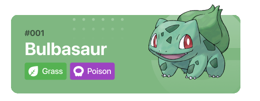
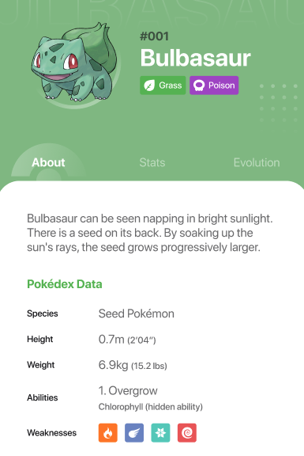
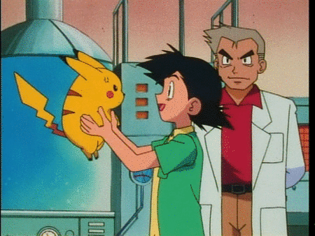

Sobre o projeto
Esta pokédex foi desenvolvido durante o processo de treinamento Pecege Starter Pack, onde os estagiários do Pecege iveram a oportunidade de colocar em prática os conhecidos adquiridos por meio da plataforma Alura.
O objetivo foi a criação de uma Pokédex (um catálogo dos Pokémons), onde fosse possível listá-los e obter informações sobre eles. A entrega deveria ser uma página Web (HTML + JS + CSS) e o layout da página poderia ser feito livremente.
A segunda delas, foi a criação de um campo de filtro, onde seria possível filtrar a lista baseado no nome ou número de cada um deles. Caso não exista correspondências ao texto inserido, deverá ser retornada uma mensagem de erro.
Por fim, ao clicar sobre qualquer um desses pokémons, deveria ser aberto um campo com informações adicionais sobre ele em outra página. Essas informações são: Imagem, Número, Nome, Peso, Altura, Badges com os tipos do Pokémon e Texto Descritivo.
Durante toda nova jornada pokémon, os treinadores que sonham em ser um mestre Pokémon contam com o auxílio de um professor, que guiam eles por este desafio. E neste projeto não foi diferente... Eu (André Luiz), assim como um jovem treinador pokémon, contei com a ajuda do mestre Felipe Fahl no desenvolvimento desta pokédex e durante todo o meu processo de aprendizagem.
A pokédex foi desenvolvida por:
André Luiz
Felipe Fahl